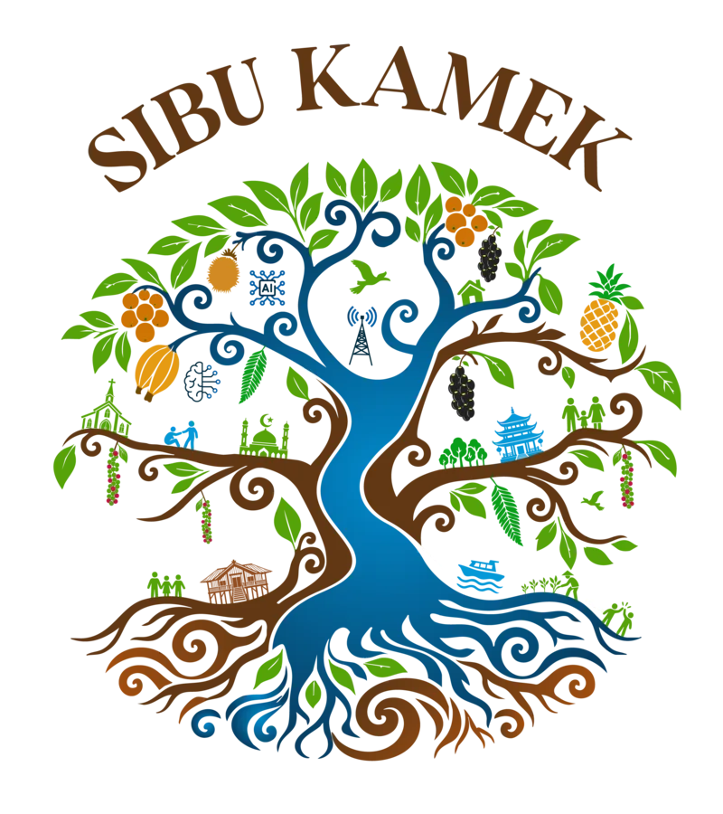

Sibu Kamek Portal
↗

About
Programmes
News
Contact
Sibu Kamek · Tree of life
Choose the roots for About, the trunk and branches for Programmes, or the leaves for News and Outcomes. Use Tab, then Enter or Space to explore.
Roots · About / Trunk & branches · Programmes / Leaves · News & Outcomes
Close ×